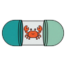
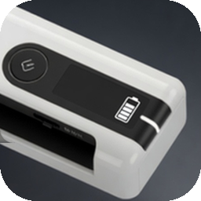
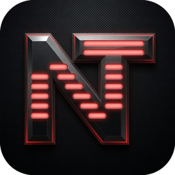

Projects
Everything I have built — software, and one van.
Software projects
- invoiceNow desktop invoicing, Gmail send integration. PrivacyTerms
-

Capsule isolated dev containers for autonomous AI agents. PrivacyTerms - Cadence offline dictation and text-to-speech for Linux. PrivacyTerms
- N-of-1 offline health tracker for Android, Linux and Windows. PrivacyTerms
-

Epson RR-70W batch scanner driver-free batch scanning on Linux. - Tagdexer files organised by tags rather than folders, and a record of the decisions behind them.
-

NitroTune fan and thermal control for the Acer Nitro on Linux. - Home Screen a browser new tab page laid out like a phone home screen.
-
 YT Downloader
a browser toolbar button for yt-dlp.
YT Downloader
a browser toolbar button for yt-dlp.
Technical projects
- Renault Master Camper van conversion: build, licensing and testing.